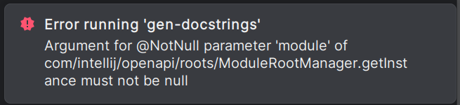

Troubleshooting
A - Prerequisite:
Run agilab.sh to install and then try to run your xxx-project. Each Agilab API call should be set with verbose mode >= 3. In particular, when debugging with a Dask worker, it will create a file (~/xxx-project_trace.txt) that shows what happened in during the worker build execution.
B - Pycharm Run/Debug configurations:
These scripts are provided to debug your app with the PyCharm IDE, which best matches Agilab troubleshooting.
runConfigurations
├── _flight_call_worker.xml
├── _flight_distribute.xml
├── _flight_egg_manager.xml
├── _flight_lib_worker.xml
├── _flight_postinstall_worker.xml
├── _flight_preinstall_manager.xml
├── _flight_run.xml
├── _flight_test.xml
├── _flight_test_manager.xml
├── _flight_test_worker.xml
├── _flight_trajectory_call_worker.xml
├── _flight_trajectory_distribute.xml
├── _flight_trajectory_egg_manager.xml
├── _flight_trajectory_lib_worker.xml
├── _flight_trajectory_postinstall_worker.xml
├── _flight_trajectory_preinstall_manager.xml
├── _flight_trajectory_run.xml
├── _flight_trajectory_test.xml
├── _flight_trajectory_test_manager.xml
├── _flight_trajectory_test_worker.xml
├── _link_sim_call_worker.xml
├── _link_sim_distribute.xml
├── _link_sim_egg_manager.xml
├── _link_sim_lib_worker.xml
├── _link_sim_postinstall_worker.xml
├── _link_sim_preinstall_manager.xml
├── _link_sim_run.xml
├── _link_sim_test.xml
├── _link_sim_test_manager.xml
├── _link_sim_test_worker.xml
├── _mycode_call_worker.xml
├── _mycode_distribute.xml
├── _mycode_egg_manager.xml
├── _mycode_lib_worker.xml
├── _mycode_postinstall_worker.xml
├── _mycode_preinstall_manager.xml
├── _mycode_run.xml
├── _mycode_test.xml
├── _mycode_test_manager.xml
├── _mycode_test_worker.xml
├── _sat_trajectory_call_worker.xml
├── _sat_trajectory_distribute.xml
├── _sat_trajectory_egg_manager.xml
├── _sat_trajectory_lib_worker.xml
├── _sat_trajectory_postinstall_worker.xml
├── _sat_trajectory_preinstall_manager.xml
├── _sat_trajectory_run.xml
├── _sat_trajectory_test.xml
├── _sat_trajectory_test_manager.xml
├── _sat_trajectory_test_worker.xml
├── agilab_run__dev_.xml
├── agilab_run__enduser_.xml
├── app_install.xml
├── app_install__local_.xml
├── app_script_gen.xml
├── core_test.xml
├── folders.xml
├── install_agilab_dev.xml
├── install_agilab_enduser.xml
├── lab_run_test.xml
├── run_ssh_cmd.xml
├── test_agi_distributor.xml
├── test_agi_env.xml
├── test_base_worker.xml
├── test_dag_worker.xml
├── test_flight.xml
├── test_flight_worker.xml
├── test_mycode.xml
├── test_mycode_worker.xml
├── test_pandas_worker.xml
├── test_polars_worker.xml
├── test_work_dispatcher.xml
└── zip_all_gen.xml
C - Exemple of Tests Sequence:
** zip-all gen**
TGenerate the zip of the whole agi project directory with .gitignore filtration. A agi.zip file should created at the root dir of your projectu
** test-agi-env test**
This will lunch unitary test for agi_env components and display their pytest results
** core test**
This will lunch all the unitary tests for agi_core components and display their pytest results
** app_script gen**
This will generate the script below
** <your app>-preinstall**
This will test the conversion of <your_code>_worker.py into <your_code>_worker.pyx to check if your code is transformable into Cython compilable source code. A file <your_code_worker.pyx> should appear in your wenv
** <your app>-postinstall test**
This will test the test your worker post_install.py.
** app-manager install**
This will install the venv in your fwk/apps/<your app>.
** app install**
This will install the venv in your fwk/apps/<your app> and in your <home>/wenv/<your worker>.
** <your app>_egg gen **
Generate your project egg file containing all the required files to compile the worker Cython library.
** <your app>_lib gen **
Generate your project lib file by compiling <your_code>_worker.pyx and add its dependencies into a Cython library.
** <your app> test**
This will test your app in a minimalistic way.
** <your app> run**
In the contexte of apps/<your app>/.venv it will run the log/AGI.<snippet> you have selected which should only be a distribute or a run one. Remark: use script “app install” to test your app install as it has to be run under fwk/core/.venv virtual environnement.
D - agilab_run vs gui_run:
1. agilab_run
Main script to lunch agilab This will run streamlit module which will run AGILAB.py in run/debug mode
12. gui-run
Only for enabling run_lab.py debugging This will directly lunch run_lab.py in run/debug mode
Known Bugs
<UV> Sync Failed
While running a script you see a “missing module” message but your module is correctly installed in your venv. And when you try to reinstall it his can lead to re-installation failures due to circular dependencies that prevent proper package version resolution. This may arrived because your UV cache has been corrupted.
Solution:
Clean the UV cache by executing the following command:
uv cache clean
<DASK> Debug Issue
While debugging Dask on Python, you might encounter the following error:
TypeError: _patch_asyncio.<locals>.run() got an unexpected keyword argument 'loop_factory'
Workaround:
Disable python.debug.asyncio.repl in the PyCharm registry. To do this, go to Naviguate/Search Everywhere (<Shift>+<Ctrl|command>+A) to open the <Action> tab then search for registry.
<PYCHARM> Run/Debug Configuration is Broken
For instance, select your “Run/Debug configuration” (e.g., <gen-docstings>) and then press [Run]. The following message appears when you try to [debug] <gen-docstings>:
Argument for @NotNull parameter ‘module’ of com/intellij/openapi/roots/ModuleRootManager.getInstance must not be null
{kind=link}

Solution:
This is because your Pycharm script is pointing an a venv but the project containing this venv is not attach to your current project. So you have to attach this project to your currrent project for enabling your script to be runnable again.
<PYCHARM> Can’t open your project
After an install of agilab when you select your project to open but it failed. This might come from pycharm/setup-pycharm.sh that have corrupted your pycharm settings
Solution (macOS):
# remove caches and index rm -rf ~/Library/Caches/JetBrains/PyCharm*
# remove locks / and broken files find ~/Library/ApplicationSupport/JetBrains -maxdepth 2 -type f -name ‘.lock’ -delete rm -f ~/Library/ApplicationSupport/JetBrains/PyCharm/options/recentProjects.xml rm -f ~/Library/ApplicationSupport/JetBrains/PyCharm*/options/other.xml.___jb_tmp___ rm -f ~/Library/ApplicationSupport/JetBrains/PyCharm*/options/jdk.table.xml rm -f ~/Library/ApplicationSupport/JetBrains/PyCharm*/options/jdk.table.xml.___jb_tmp___